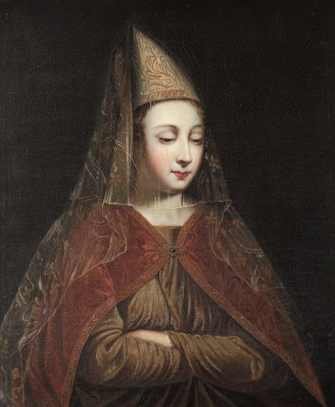

Roxelana
The portrait
The portrait depicts Hürrem Sultan (Roxelana) in sumptuous clothing and is attributed to a follower of Titian from the sixteenth-century Venetian school. It is not a portrait painted from life, but an idealised representation in the style of the European Renaissance.
Origin and attribution
Attribution: This portrait is generally attributed to a follower of Titian, one of the great masters of Venetian painting. It is not by Titian himself, but was painted in his style, probably by an artist working in his workshop or imitating his technique.
Style: The painting reflects Italian Renaissance aesthetics, with richly decorated clothing, luxurious fabrics and an elaborate headdress, all symbols of power and nobility. The face is idealised rather than lifelike, as was common in depictions of figures perceived as exotic or legendary.
Historical context
Hürrem Sultan (1500–1558), traditionally known as Aleksandra Lisowska, was an enslaved woman from what is now Ukraine who became the legal wife of Süleyman the Magnificent, breaking with the practice followed by recent generations of Ottoman sultans.
She was an influential figure in Ottoman politics, known for her intelligence, diplomacy and support for public and religious foundations. Her role helped usher in the so-called Sultanate of Women, a period when imperial consorts exercised considerable power.
The meaning of the portrait
This portrait was probably produced in Europe rather than commissioned by the Ottoman court, reflecting European curiosity about the East.
Images and descriptions of the work circulate through resources such as Wikimedia Commons and Christie’s. The portrait belongs to a European artistic tradition that depicted historical figures from the East in an idealised manner.